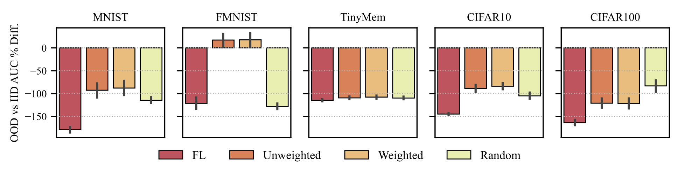

Decentralized learning enables collaborative training of models across naturally distributed data without centralized coordination or maintenance of a global model. Instead, devices are organized in arbitrary communication topologies, in which they can only communicate with neighboring devices. Each device maintains its own local model by training on its local data and integrating new knowledge via model aggregation with neighbors. Therefore, knowledge is propagated across the topology via successive aggregation rounds. We study, in particular, the propagation of out-of-distribution (OOD) knowledge. We find that popular decentralized learning algorithms struggle to propagate OOD knowledge effectively to all devices. Further, we find that both the location of OOD data within a topology, and the topology itself, significantly impact OOD knowledge propagation. We then propose topology-aware aggregation strategies to accelerate (OOD) knowledge propagation across devices. These strategies improve OOD data accuracy, compared to topology-unaware baselines, by 123% on average across models in a topology.
Most machine learning training data are generated, collected, and sensed from decentralized sources: Internet-of-Things, edge/fog/cloudlet computing systems, sensor networks, smart grids, and smart transportation networks. Because most data are naturally decentralized, a question arises: How do we train models across decentralized data?
Decentralized Learning enables collaborative learning across decentralized data without creating a single global model or requiring that data be centralized. Instead, training devices are located at/near data generation sites. Each device maintains its model by training over local data and integrating additional (non-local) knowledge by periodically receiving neighboring devices’ models and aggregating them with its local model. Devices are organized in a flexible topology in which nodes represent devices and edges/links represent communication channels. Communication channels between devices can be a function offactors like physical locality, administrative connections, and privacy concerns.
argument descriptions:
M: set of models in topology
S: aggregation strategy
Rounds: number of communication rounds between devices
DecentralizedLearning():
for mi ∈ M do:
Initialize mi0 # model at device i
Initialize xi # data at device i
for t ∈ Rounds do:
for mi ∈ M do:
mit + 1/2 ← LocalTrain(mit)
for mi ∈ M do:
Ni ← {neighbors(mit + 1/2) ∪ mit + 1/2} # models in device i's neighborhood
Ci ← GetAggregationCoeffs(Ni, S) # aggregation coefficients for models in neighborhood
mit + 1 ← ∑j∈Ni Ci,j * mjt + 1/2
The flexibility afforded by decentralized learning can come at a cost, in particular slower convergence and regional/hyperpersonalized models that lack knowledge from distant devices. To prevent this from happening, we aim for each device-specific model to be performant over the global data distribution across all devices in a topology; device-specific models must be generalizable beyond their local data distribution so that they are performant on out-of-distribution (OOD) inference requests. This is especially challenging in decentralized learning as the only way for device-specific knowledge to propagate in a topology is by “hopping” between devices via successive aggregation rounds.
Here, we study knowledge propagation in decentralized topologies by asking: How can each device-specific model learn from all data present in a topology, regardless of its location, in as few aggregation rounds as possible? This goal is especially challenging in settings where data are not independently and identically distributed (IID) across devices as devices have no knowledge of how data are distributed globally
We study the extreme case in which most data in a topology are IID, with the exception of a single device which contains OOD data. In the figure below, we report average percent difference in test accuracy AUC between IID and OOD data over 40 rounds of training across all devices in a topology; averaged again over 3 realistic 33 device topologies and 3 seeds. OOD data was placed on the node with the fourth highest degree. Lower percent difference indicates that the OOD data did not propagate to as many nodes as the IID data.

Existing decentralized learning strategies (i.e., FL, Unweighted, Weighted, Random) struggle to propagate the OOD knowledge.
...
...
...
...
Machine learning training data are largely generated, collected, and sensed from decentralized sources. Decentralized learning algorithms enable learning over these naturally decentralized data without centralized coordination; instead, training devices self-organize into communication topologies that arise from real-world constraints (e.g., physical locality, administrative connections, privacy concerns). In decentralized learning, because devices can only communicate with neighboring devices, knowledge propagates via model aggregation between neighbors. We find a critical limitation in existing decentralized learning strategies: they struggle to propagate OOD knowledge to the same extent at IID knowledge. This limitation affects the performance of models that are not able to learn from OOD data present in the topology.
We find that the propagation of OOD knowledge is greatly impacted by both the location of OOD data in a topology and the topology itself. To address these challenges, we introduce topology-aware decentralized learning strategies that enable reliable propagation of OOD knowledge in arbitrary communication topologies. We demonstrate that our proposed topology-aware aggregation strategies outperform traditional aggregation strategies. We also study the impact of topology node count, modularity, and degree distribution on topology-aware aggregation strategy performance. We show that regardless of how these values are varied, topology-aware methods perform as well as, or better than, traditional aggregation strategies.
Future work may extend topology-aware aggregation strategies to consider additional centrality metrics, further study the impact of topology on topology-aware aggregation strategies, extend topology-aware learning to online learning settings (e.g., data streaming applications), and further characterize the behavior of topology-aware metrics under different types of data distribution.
Further details about all experiments and figures discussed in this blog can be found in the main paper. If there are any questions feel free to email the first author for clarification.
@article{sakarvadia2025topology,
title={Topology-Aware Knowledge Propagation in Decentralized Learning},
author={Mansi Sakarvadia and Nathaniel Hudson and Tian Li and Ian Foster and Kyle Chard},
year={2025},
eprint={2505.11760},
url={https://arxiv.org/abs/2505.11760},
}